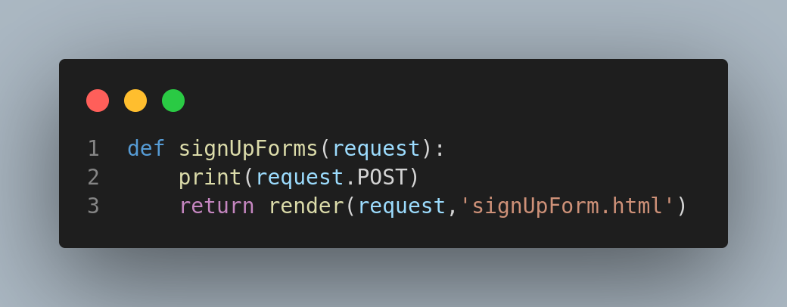
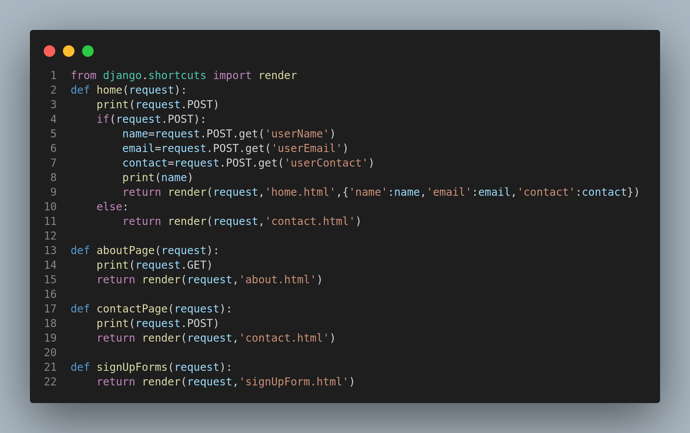

- CSRF Token
- Get Post Method
- Built in form of django
- API Form
- Crispy Form
- Django Form Argument
Topic
CSRF Token
Cross Site Request Forgery. It must be added at begining the any form. Check line 4 of this ss.

Topic
Get Post
Generally, get method does not use because of it's vulnerability. Post method used to visitors data. Check line 3 of 1st html code and check line 2 of 2nd python code.


Task: Show visitor contact data on home page.
Solution:


Check line no 2-11 of python code.
Topic
Built in form of django
2 type of form. API form and Model Form.